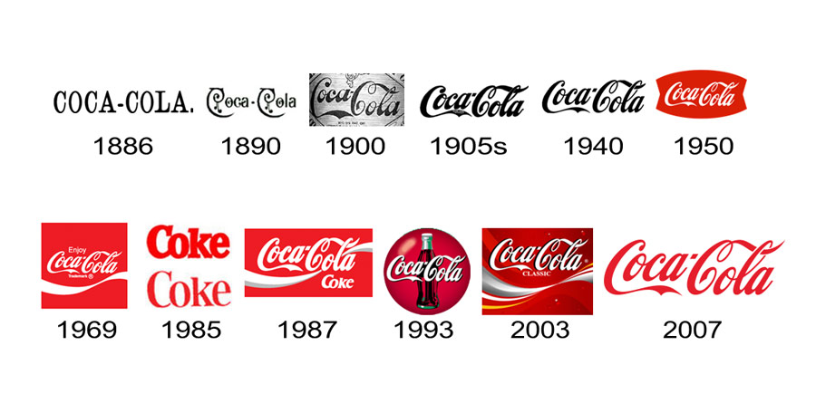
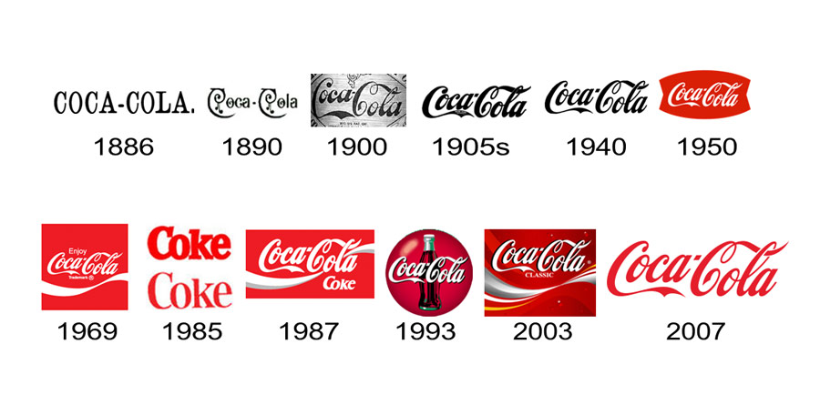

Nuestra misión es refrescar el mundo, Inspirar momentos de felicidad, Crear valor para sus accionistas y la sociedad.
Nuestra visión es crear las marcas y la selección de bebidas que la gente adora, para refrescar su cuerpo y espíritu. Y hacerlo de maneras que creen un negocio más sostenible y un futuro compartido mejor que marque la diferencia en la vida de las personas, las comunidades y nuestro planeta.
Nuestros valores son la base de nuestra cultura y guían nuestras acciones y decisiones. Estos valores nos ayudan a construir relaciones sólidas con nuestros empleados, clientes y comunidades, y a mantener nuestra reputación como una empresa responsable y ética.
- Liderazgo: La valentía de moldear un futuro mejor.
- Colaboración: Aprovechar el genio colectivo.
- Integridad: Ser auténtico y actuar con honestidad.
- Responsabilidad: Asumir las consecuencias de las acciones.
- Pasión: Comprometerse con el corazón y la mente.
- Diversidad: Ser inclusivos y valorar la diversidad.
- Calidad: Hacer las cosas bien y buscar la excelencia.
El nacimiento de una idea refrescante.
En 1886, en la ciudad de Atlanta, Georgia, el Dr. John Stith Pemberton, un farmacéutico local, creó una fórmula para una bebida que inicialmente se vendió como un tónico para el cerebro y los nervios. La bebida, que contenía hojas de coca y nueces de cola, se llamó Coca-Cola y se promocionó por sus supuestos beneficios medicinales. Sin embargo, lo que realmente hizo que Coca-Cola se destacara fue su sabor único y refrescante, que rápidamente ganó popularidad entre los consumidores.
Historia de Coca-Cola
El 8 de mayo de 1886, la Coca-Cola fue vendida por primera vez en una farmacia del barrio de Five Points (Atlanta). La bebida se servía en una fuente de soda y se proporcionaba como medio eficaz para aliviar el cansancio físico y mental. El negocio comenzó a crecer lentamente, pero Pemberton había sido diagnosticado con una enfermedad mortal, por lo que vendió los derechos de la bebida a su socio Frank Robinson, quien fue el encargado de dar el nombre y el reconocible logotipo a Coca-Cola, la caligrafía Spencerian. No obstante, en 1888, a raíz de sus problemas económicos, Robinson vendió los derechos a Asa Candler, un empresario que fue clave para la expansión de la bebida. Por ejemplo, implementó el embotellado de Coca-Cola en 1899. Igualmente, con el cambio en las actitudes sociales, en 1929, el refresco sustituyó la cocaína (9 mg por vaso) por la cafeína.
Evolución y expansión
A lo largo de los años, Coca-Cola ha evolucionado y se ha adaptado a los cambios en el mercado y las preferencias de los consumidores. La compañía ha introducido una variedad de productos, incluyendo Diet Coke, Coca-Cola Zero Sugar y diferentes sabores y tamaños para satisfacer las necesidades de sus clientes.
Galeria de la historia de Coca-Cola

 
